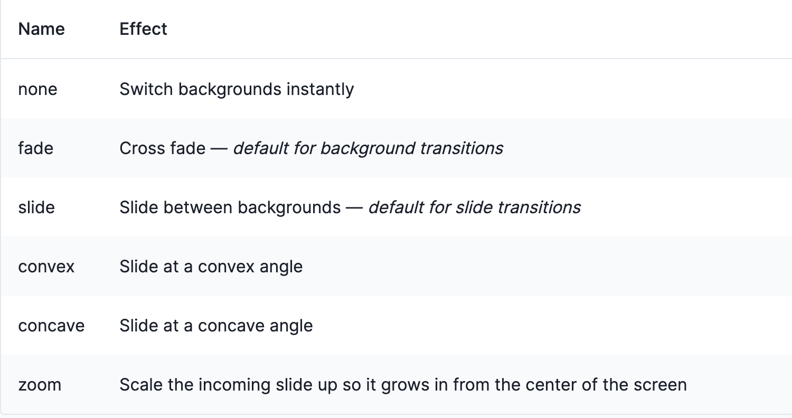

How to use Fragments and Transitions in reveal.js
Fragments
Fragments are used to
highlight
or incrementally reveal
individual elements on a slide.
Every element with the class fragment will be stepped through before moving on to the next slide.
Fragments can...
Fade In
Fade Out
Fade to the Side
Fade In then Out
Grow
Shrink
Highlight
To Incorporate Fragments into Code...
Fade In
Fade Out
Fade to the Left
Fade to the Right
...simply add class tags to the item you are fragmenting
Nested Fragments can also be used in order to fragment an item multiple times
Transitions
When navigating a presentation, we transition between slides by animating them from right to left by default
Reveal.js includes a number of transitions (we've been using zoom)...
Fade

Slide

Convex

Concave

To Incorporate Transitions into Code...
Slide #1
Slide #2
Slide #3